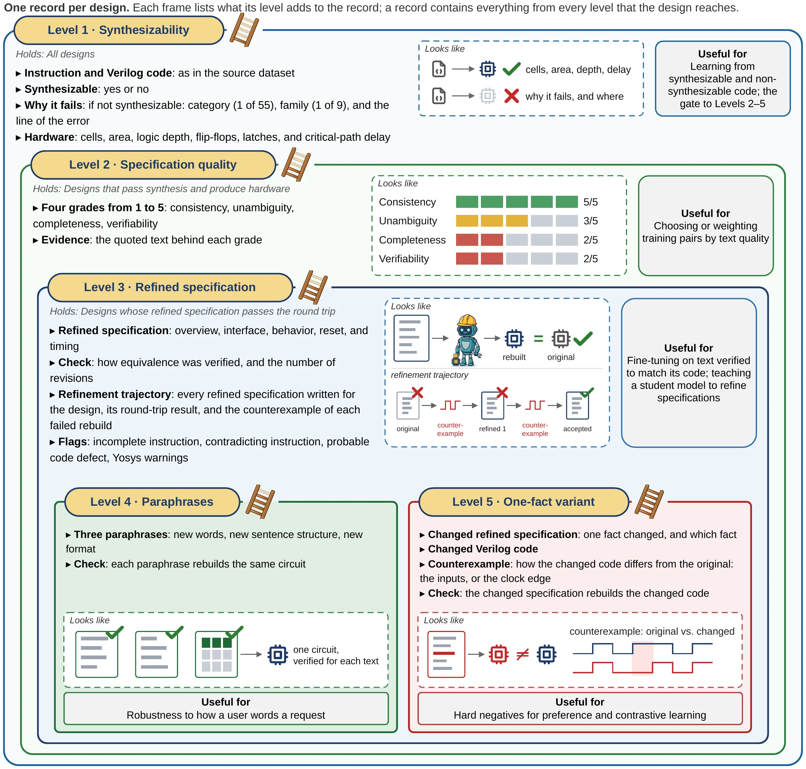
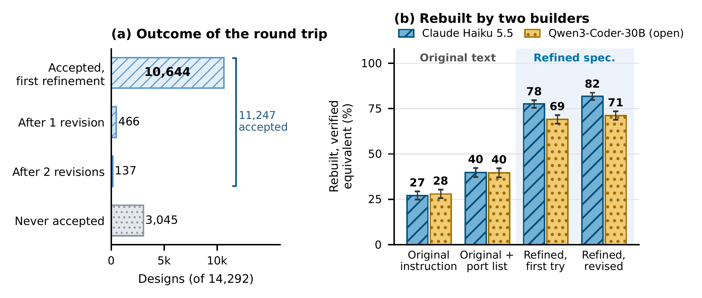
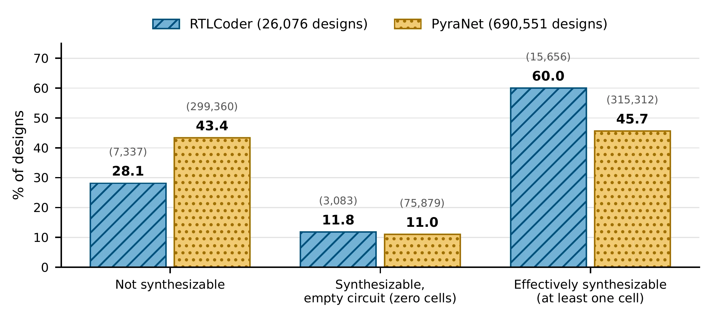

Training data is a bottleneck in AI, especially for large language models (LLMs) that write Verilog, because register-transfer-level (RTL) code is rarely published and existing datasets mostly check code for syntax, not instruction correctness. This paper presents VeriLadder, a five-level Verilog dataset, and the multi-agent framework that builds it, in which LLM agents write and revise specifications, and EDA tools (a synthesizer and a formal equivalence checker) decide what is accepted. Its levels follow an engineer's checks.
Level 1 labels designs from two large Verilog corpora, namely RTLCoder and PyraNet, with synthesis results, failure causes, critical warnings and post-synthesis metrics. 28% of RTLCoder designs fail synthesis and are kept as negatives. Level 2 grades each instruction on four specification qualities, and low grades predict failed rebuilds. Level 3 rewrites each instruction into a refined specification and accepts it only if an LLM from another model family, reading only that specification, writes a circuit formally equivalent to the original. This raises the share of rebuildable designs from 26.1% to 78.2%, keeping every failed specification with its counterexample. Levels 4 and 5 add verified paraphrases and one-fact variants, hard negatives that differ only in one behavior from the verified design. VeriLadder labels the synthesizability of 716,627 designs and, from RTLCoder, provides 11,247 refined specifications, 32,393 paraphrases and 8,397 one-fact variants. Fine-tuning Qwen2.5-Coder-7B-Instruct on VeriLadder raises functional pass@1 from 31.7% to 50.0% on VerilogEval v2 and from 35.0% to 45.2% on RTLLM v2. The dataset and fine-tuned models are publicly available.
Each level asks the question an engineer would ask next, and holds only the designs that reach it. Level 1 covers both corpora, and Levels 2 to 5 are applied to the 15,656 effectively synthesizable RTLCoder designs, of which 14,385 pass the entry checks.
| Level | Question | What a record adds | Released |
|---|---|---|---|
| Level 1 | Is the code synthesizable? | Synthesis label, failure family and Yosys log, critical warnings, cell count, area and critical-path delay | 716,627 designs 26,076 RTLCoder, 690,551 PyraNet |
| Level 2 | How good is the instruction? | Grades from 1 to 5 for consistency, unambiguity, completeness and verifiability, with evidence and gaps | 14,292 graded instructions |
| Level 3 | Does the refined specification determine the circuit? | Refined specification verified by formal equivalence, and the trajectory of every revision with its counterexample | 11,247 refined specifications trajectories of 14,385 designs |
| Level 4 | Does a rewording keep the circuit? | Lexical, syntactic and representational paraphrases, each rebuilt and verified equivalent | 32,393 paraphrases |
| Level 5 | Is a change of one requirement noticed? | Specification and code with exactly one fact changed, and the counterexample against the original | 8,397 one-fact variants |
| Bench | Can a model write the circuit? | VeriLadder-Bench, 300 held-out refined specifications checked by formal equivalence | 300 problems |

What a record of VeriLadder contains. Each frame lists what one level adds. At Level 3 the record keeps the refinement trajectory, and at Level 5 the counterexample of every one-fact variant.
Two RTLCoder designs taken from the dataset. A small combinational circuit, digital_system,
goes through Levels 1 to 3, and a saturating adder, adder, through Levels 3
to 5. Texts are shown as stored; only the highlighting is added.
One record for each outcome of the synthesis label.
digital_system, synthesizablealways @* begin
if ((a+b+c+d)%3 == 0)
out <= 1;
else out <= 0;
end
Synthesizable, yes
Critical warnings, none
Cells 5, area 5.9 µm²
Flip-flops 0, logic depth 3
Critical-path delay 0.11 ns
always @ (posedge datain
or negedge datain)
buffer <= datain;
Synthesizable, no
Yosys says “ERROR: Multiple edge sensitive events found for this signal!”
Family, clocking and sequential inference
or or0 (pgood_out, A2, A1); or or1 (pgood_out, B2, B1); not not0 (pgood_out, pgood_out);
Synthesizable, yes
Critical warning, conflicting drivers (“Warning: multiple conflicting drivers for power_good...”)
pgood_out; a pass label alone would hide the defect.The scorer grades the original instruction of digital_system and reports what is
missing, shown here in plain words (red, phrases that leave the behavior open).
module digital_system (
input a, input b, input c, input d,
output reg out
);
always @* begin
if ((a+b+c+d)%3 == 0) begin
out <= 1;
end else begin
out <= 0;
end
end
endmodule
| Consistency | 5 | No gap. What the instruction states is true of the code. |
| Unambiguity | 3 | “The input is a multiple of 3” does not say whether a, b, c, d
form one 4-bit number or are four bits to be added. The two readings disagree, for example on 1100
(as a number, 12 is a multiple of 3; as a sum, 1+1+0+0 = 2 is not) and on 1110 (as a number,
14 is not; as a sum, 1+1+1+0 = 3 is). |
| Completeness | 2 | The module name, the output name and the port directions are missing. |
| Verifiability | 3 | “Minimize the number of gates” gives no gate count or limit, so no test can check it. |
The refined specification of digital_system closes the gaps that Level 2
reported (green) and is accepted because every rebuild from it is proven
equivalent to the code.
Overview. digital_system produces a logic-1 when the sum of its four input bits is divisible by 3, and a logic-0 otherwise.
Interface. Module digital_system. Inputs a, b, c, d, each 1-bit unsigned. Output out, 1-bit unsigned.
Behavior. For every combination of a, b, c, and d, out is 1 exactly when the sum of their individual bit values is divisible by 3; otherwise out is 0. The result is combinational with no cycle latency.
A refinement trajectory. The first refined specification of a saturating adder wrongly states that the sum wraps at 8 bits. The counterexample shows that the code saturates instead, and the revised specification, which compares the full sum, is accepted.
module adder(input [7:0] A, input [7:0] B,
output reg [7:0] Y);
always @(*) begin
if (A + B > 255) begin
Y <= 255;
end else begin
Y <= A + B;
end
end
endmodule
| A | B | Y, original | Y, rebuilt |
|---|---|---|---|
| 255 | 128 | 255 | 127 |
A + B > 255 is computed with more than 8 bits, so the sum does
not wrap and the code saturates.Three paraphrases of the accepted specification of the saturating adder, one per kind of change. Each is rebuilt into a circuit verified equivalent to the code.
A and B
relative to 255. For a total exceeding 255, the output Y takes the value 255. For a total that
does not exceed 255, Y carries the total's least significant 8 bits.A and B
against 255. The output rule is:
| Total | Y |
|---|---|
| Greater than 255 | 255 |
| Not greater than 255 | The total's least significant 8 bits |
The saturation value of the adder changes from 255 to 254 in both the specification and the code, and the counterexample shows where the variant and the original differ.
if (A + B > 255) begin Y <= 254; // was: 255 end else ...
| A | B | Y, original | Y, variant |
|---|---|---|---|
| 143 | 128 | 255 | 254 |
From the original instruction, the builder LLM rebuilds a circuit verified equivalent to the code for only 26.1% of the 14,385 designs, and 36.7% when the exact list of ports is added. The refined specifications of VeriLadder raise this to 78.2%, and every accepted specification is confirmed by a formal equivalence check. The gain also holds for an open-source builder, Qwen3-Coder-30B (28% to 71%), so it is not tied to the builder that the pipeline uses.

(a) Outcome of the 14,292 designs that reach the round trip; the 11,247 accepted designs give the refinement trajectories. (b) Share of designs that each builder rebuilds from each kind of specification, verified equivalent to the original code (1,460 randomly sampled designs; 95% confidence intervals).

Level 1 outcome for each dataset, as a share of all designs (numbers of designs in parentheses). An empty circuit is synthesizable but maps to no standard cell.
Models fine-tuned on the Level 3 refined specifications are compared with foundation models, specialized Verilog models, and the same base models trained on the original RTLCoder instructions.
| VerilogEval v2 | RTLLM v2 | VeriLadder-Bench | ||||
|---|---|---|---|---|---|---|
| Model | pass@1 | pass@5 | pass@1 | pass@5 | pass@1 | pass@5 |
| Foundation, closed | ||||||
| GPT-4o | 65.9 | 71.2 | 57.6 | 66.0 | 86.5 | 92.7 |
| GPT-5 | 71.2 | 80.8 | 57.6 | 66.0 | 87.6 | 94.7 |
| GPT-6-sol | 85.5 | 89.1 | 71.2 | 76.0 | 92.9 | 93.7 |
| Foundation, open-source | ||||||
| Llama-3.1-8B-Instruct | 23.0 | 34.9 | 16.7 | 32.0 | 41.5 | 69.7 |
| Qwen2.5-7B-Instruct | 25.5 | 38.7 | 26.2 | 43.6 | 55.4 | 75.4 |
| Qwen2.5-Coder-7B-Instruct | 31.7 | 47.3 | 35.0 | 50.0 | 61.7 | 79.5 |
| Specialized, open-source | ||||||
| CodeV-CL-7B | 25.5 | 43.1 | 28.5 | 45.6 | 45.8 | 72.7 |
| RTLCoder-DS-6.7B | 34.6 | 47.3 | 36.6 | 48.4 | 61.3 | 80.1 |
| Trained on RTLCoder (original dataset) | ||||||
| Qwen2.5-7B-Instruct | 35.1 | 44.1 | 24.0 | 36.0 | 61.1 | 77.1 |
| Qwen2.5-Coder-7B-Instruct | 39.4 | 46.7 | 31.2 | 44.0 | 67.2 | 81.3 |
| Ours, trained on VeriLadder | ||||||
| VeriLadder-Qwen-7B | 44.5 | 59.0 | 36.4 | 48.0 | 79.5 | 90.0 |
| VeriLadder-QwenCoder-7B | 50.0 | 61.5 | 45.2 | 54.0 | 83.1 | 92.3 |
Functional pass@k (%) with five samples per problem. VeriLadder-Bench is the 300 held-out designs with refined specifications, checked by formal equivalence. Bold marks the best open-source model. VeriLadder-Qwen-7B and VeriLadder-QwenCoder-7B are Qwen2.5-7B-Instruct and Qwen2.5-Coder-7B-Instruct fine-tuned on VeriLadder.
Training with Kahneman–Tversky optimization (KTO), which needs only a desirable or undesirable label per example, on the Level 1 labels raises the share of synthesizable code for each of eight open-source LLMs, by 10.9 to 55.6 percentage points on 7,900 test prompts.
| Model | Pre-trained | KTO | Gain |
|---|---|---|---|
| Qwen2.5-Coder-7B-Instruct | 77.5 | 89.0 | +11.5 |
| Qwen3-32B | 70.4 | 84.3 | +13.9 |
| Qwen2.5-7B-Instruct | 60.1 | 80.8 | +20.7 |
| Qwen2.5-Coder-1.5B-Instruct | 40.6 | 80.6 | +40.0 |
| Qwen2.5-14B-Instruct | 69.7 | 80.6 | +10.9 |
| Gemma-3-4B-it | 52.2 | 78.7 | +26.5 |
| Llama-3.1-8B-Instruct | 16.9 | 72.5 | +55.6 |
| Llama-3.2-1B-Instruct | 7.8 | 45.4 | +37.6 |
Share of synthesizable code (%) on the 7,900 test prompts, before and after KTO.
Every level is a Parquet subset on Hugging Face, and the files share the RTLCoder line index id
as their key. The dataset is released under CC BY-NC-SA 4.0 and the models under Apache 2.0.
from datasets import load_dataset
l1 = load_dataset("saeidrajabi/VeriLadder", "level1_rtlcoder", split="train").to_pandas()
l3 = load_dataset("saeidrajabi/VeriLadder", "level3_refined", split="train").to_pandas()
# refined specification next to the original instruction and code
pairs = l3[l3.accepted].merge(l1[["id", "instruction", "code"]], on="id")
# other subsets: level1_pyranet, level2_grades, level3_trajectories,
# level4_paraphrases, level5_variants, veriladder_bench, pipeline_records@article{rajabi2026veriladder,
title={VeriLadder: A Multi-Agent Specification Refinement System for Tool-Verified Verilog Datasets},
author={Rajabi, Saeid and Yang, Chengmo and Patnaik, Satwik},
journal={arXiv preprint arXiv:2611.28617},
year={2026}
}